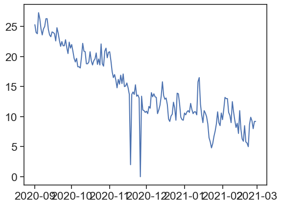

Code
import pandas as pd
import numpy as np
import matplotlib.pyplot as plt
import seaborn as sns
sns.set(style="ticks", font_scale=1.5)let‚Äôs have fun plotting some data üòÄ
data-sep2020-feb2021We need to import this data into python. First we import useful packages. Type (don’t copy and paste) the following lines in the code cell below.
import pandas as pd
import numpy as np
import matplotlib.pyplot as plt
import seaborn as sns
sns.set(style="ticks", font_scale=1.5)Import data from csv and put it in a pandas dataframe (a table). Make line 5 the header (column names)
df = pd.read_csv("data-sep2020-feb2021.csv", header=[4])
df| Unnamed: 0 | �C | �C.1 | km/h | mm | mm.1 | |
|---|---|---|---|---|---|---|
| 0 | 01/09/20 | 32.8 | 25.3 | 29.7 | 0.0 | 0.0 |
| 1 | 02/09/20 | 33.0 | 24.0 | 28.8 | 0.0 | 0.0 |
| 2 | 03/09/20 | 34.2 | 23.8 | 31.6 | 0.0 | 0.0 |
| 3 | 04/09/20 | 36.3 | 27.3 | 24.2 | 0.0 | 0.0 |
| 4 | 05/09/20 | 34.2 | 26.3 | 22.4 | 0.0 | 0.0 |
| ... | ... | ... | ... | ... | ... | ... |
| 176 | 24/02/21 | 20.6 | 9.9 | 28.8 | 0.0 | 481.7 |
| 177 | 25/02/21 | 19.4 | 9.3 | 23.3 | 0.0 | 481.7 |
| 178 | 26/02/21 | 21.3 | 8.0 | 24.2 | 0.1 | 481.8 |
| 179 | 27/02/21 | 23.4 | 9.2 | 30.6 | 0.0 | 481.8 |
| 180 | 28/02/21 | 19.7 | 9.2 | 22.4 | 0.0 | 481.8 |
181 rows × 6 columns
rename the columns to:
date, tmax, tmin, wind, rain24h, rain_cumulative
df.columns = ['date', 'tmax', 'tmin', 'wind', 'rain24h', 'rain_cumulative']
df| date | tmax | tmin | wind | rain24h | rain_cumulative | |
|---|---|---|---|---|---|---|
| 0 | 01/09/20 | 32.8 | 25.3 | 29.7 | 0.0 | 0.0 |
| 1 | 02/09/20 | 33.0 | 24.0 | 28.8 | 0.0 | 0.0 |
| 2 | 03/09/20 | 34.2 | 23.8 | 31.6 | 0.0 | 0.0 |
| 3 | 04/09/20 | 36.3 | 27.3 | 24.2 | 0.0 | 0.0 |
| 4 | 05/09/20 | 34.2 | 26.3 | 22.4 | 0.0 | 0.0 |
| ... | ... | ... | ... | ... | ... | ... |
| 176 | 24/02/21 | 20.6 | 9.9 | 28.8 | 0.0 | 481.7 |
| 177 | 25/02/21 | 19.4 | 9.3 | 23.3 | 0.0 | 481.7 |
| 178 | 26/02/21 | 21.3 | 8.0 | 24.2 | 0.1 | 481.8 |
| 179 | 27/02/21 | 23.4 | 9.2 | 30.6 | 0.0 | 481.8 |
| 180 | 28/02/21 | 19.7 | 9.2 | 22.4 | 0.0 | 481.8 |
181 rows × 6 columns
plot the minimum temperature:
#collapse-hide
plt.plot(df['tmin'])
We want the dates to appear on the horizontal axis.
Interpret ‘date’ column as a pandas datetime, see how it looks different from before
before: 01/09/20
after: 2020-09-01
#collapse-hide
df['date'] = pd.to_datetime(df['date'], dayfirst=True)
df| date | tmax | tmin | wind | rain24h | rain_cumulative | |
|---|---|---|---|---|---|---|
| 0 | 2020-09-01 | 32.8 | 25.3 | 29.7 | 0.0 | 0.0 |
| 1 | 2020-09-02 | 33.0 | 24.0 | 28.8 | 0.0 | 0.0 |
| 2 | 2020-09-03 | 34.2 | 23.8 | 31.6 | 0.0 | 0.0 |
| 3 | 2020-09-04 | 36.3 | 27.3 | 24.2 | 0.0 | 0.0 |
| 4 | 2020-09-05 | 34.2 | 26.3 | 22.4 | 0.0 | 0.0 |
| ... | ... | ... | ... | ... | ... | ... |
| 176 | 2021-02-24 | 20.6 | 9.9 | 28.8 | 0.0 | 481.7 |
| 177 | 2021-02-25 | 19.4 | 9.3 | 23.3 | 0.0 | 481.7 |
| 178 | 2021-02-26 | 21.3 | 8.0 | 24.2 | 0.1 | 481.8 |
| 179 | 2021-02-27 | 23.4 | 9.2 | 30.6 | 0.0 | 481.8 |
| 180 | 2021-02-28 | 19.7 | 9.2 | 22.4 | 0.0 | 481.8 |
181 rows × 6 columns
Make ‘date’ the dataframe’s index (leftmost column, but not really a column!)
#collapse-hide
df = df.set_index('date')
df| tmax | tmin | wind | rain24h | rain_cumulative | |
|---|---|---|---|---|---|
| date | |||||
| 2020-09-01 | 32.8 | 25.3 | 29.7 | 0.0 | 0.0 |
| 2020-09-02 | 33.0 | 24.0 | 28.8 | 0.0 | 0.0 |
| 2020-09-03 | 34.2 | 23.8 | 31.6 | 0.0 | 0.0 |
| 2020-09-04 | 36.3 | 27.3 | 24.2 | 0.0 | 0.0 |
| 2020-09-05 | 34.2 | 26.3 | 22.4 | 0.0 | 0.0 |
| ... | ... | ... | ... | ... | ... |
| 2021-02-24 | 20.6 | 9.9 | 28.8 | 0.0 | 481.7 |
| 2021-02-25 | 19.4 | 9.3 | 23.3 | 0.0 | 481.7 |
| 2021-02-26 | 21.3 | 8.0 | 24.2 | 0.1 | 481.8 |
| 2021-02-27 | 23.4 | 9.2 | 30.6 | 0.0 | 481.8 |
| 2021-02-28 | 19.7 | 9.2 | 22.4 | 0.0 | 481.8 |
181 rows × 5 columns
Plot minimum temperature, now we have dates on the horizontal axis
#collapse-hide
plt.plot(df['tmin'])
Let’s make the graph look better: labels, title, slanted dates, etc
#collapse-hide
# creates figure (the canvas) and the axis (rectangle where the plot sits)
fig, ax = plt.subplots(1, figsize=(10,7))
# two line plots
ax.plot(df['tmin'], color="red", label="Temp (min)")
ax.plot(df['tmax'], color="blue", label="Temp (max)")
# axes labels and figure title
ax.set_xlabel('date')
ax.set_ylabel('temperature (°C)')
ax.set_title('maximum and minimum temperatures')
# some ticks adjustments
ax.set_yticks([10,15,20,25]) # we can choose where to put ticks
ax.grid(axis='y') # makes horizontal lines
plt.gcf().autofmt_xdate() # makes slated dates
# legend
ax.legend(loc='upper right')
# save png figure
plt.savefig("temp_max_min.png")Use the following function to plot bars for daily rainfall
ax.bar(x_array, y_array)Can you write yourself some lines of code that calculate the cumulative rainfall from the daily rainfall?
#collapse-hide
# creates figure (the canvas) and the axis (rectangle where the plot sits)
fig, ax = plt.subplots(1, figsize=(10,7))
# line and bar plots
ax.bar(df.index, df['rain24h'], color="blue", label="daily rainfall")
# there are many ways of calculating the cumulative rain
# method 1, use a for loop:
# rain = df['rain24h'].to_numpy()
# cumulative = rain * 0
# for i in range(len(rain)):
# cumulative[i] = np.sum(rain[:i])
# df['cumulative1'] = cumulative
# method 2, use list comprehension:
# rain = df['rain24h'].to_numpy()
# cumulative = [np.sum(rain[:i]) for i in range(len(rain))]
# df['cumulative2'] = cumulative
# method 3, use existing functions:
df['cumulative3'] = np.cumsum(df['rain24h'])
ax.plot(df['cumulative3'], color="red", label="cumulative rainfall")
# compare our cumulative rainfall with the downloaded data
# ax.plot(df['rain_cumulative'], 'x')
# axes labels and figure title
ax.set_xlabel('date')
ax.set_ylabel('rainfall (mm)')
ax.set_title('daily and cumulative rainfall')
ax.set_xlim(['2020-11-01','2021-02-28'])
# some ticks adjustments
plt.gcf().autofmt_xdate() # makes slated dates
# legend
ax.legend(loc='upper left')
# save png figure
plt.savefig("cumulative_rainfall.png")
In order to choose just a part of the time series, you can use the following:
start_date = '2021-01-01'
end_date = '2021-01-31'
january = df[start_date:end_date]#collapse-hide
# creates figure (the canvas) and the axis (rectangle where the plot sits)
fig, ax = plt.subplots(1, figsize=(10,7))
# define date range
start_date = '2021-01-01'
end_date = '2021-01-31'
january = df[start_date:end_date]['tmax']
# plots
ax.plot(january, color="red", label="daily max")
ax.plot(january*0 + january.mean(), color="purple", linestyle="--", label="average daily max")
# axes labels and figure title
ax.set_xlabel('date')
ax.set_ylabel('temperature (°C)')
ax.set_title('average daily maximum temperature for January 2021')
# some ticks adjustments
plt.gcf().autofmt_xdate() # makes slated dates
# legend
ax.legend(loc='lower left')
# save png figure
plt.savefig("average_max_temp.png")
Use the following code to create histograms with user-defined bins:
b = np.arange(0, 56, 5) # bins from 0 to 55, width = 5
ax.hist(df['wind'], bins=b, density=True)Play with the bins, see what happens. What does density=True do?
#collapse-hide
# creates figure (the canvas) and the axis (rectangle where the plot sits)
fig, ax = plt.subplots(1, figsize=(10,7))
# histogram
b = np.arange(0, 56, 5) # bins from 0 to 55, width = 5
ax.hist(df['wind'], bins=b, density=True)
# axes labels and figure title
ax.set_xlabel('max wind speed (km/h)')
ax.set_ylabel('frequency')
ax.set_title('frequency of maximum wind speed')
# save png figure
plt.savefig("wind-histogram.png")Go back to the weather station website, download one year of data from 01.01.2020 to 31.12.2020 (24h data). If you can’t download the data, just click here. Make the following graph: - daily tmax and tmin - smoothed data for tmax and tmin
In order to smooth the data with a 30 day window, use the following function:
df['tmin'].rolling(30, center=True).mean()
This means that you will take the mean of 30 days, and put the result in the center of this 30-day window.
Play with this function, see what you can do with it. What happens when you change the size of the window? Why is the smoothed data shorter than the original data? See the documentation for rolling to find more options.
#collapse-hide
fig, ax = plt.subplots(figsize=(10,7))
df2 = pd.read_csv("1year.csv", header=[4])
df2['date'] = pd.to_datetime(df2['date'], dayfirst=True)
df2 = df2.set_index('date')
plt.plot(df2['tmax'], label='tmax', color="tab:red")
plt.plot(df2['tmin'], label='tmin', color="tab:blue")
tmin_smooth = df2['tmin'].rolling(30, center=True).mean()
tmax_smooth = df2['tmax'].rolling(30, center=True).mean()
plt.plot(tmax_smooth, label='tmax smoothed', color="tab:pink", linestyle="--", linewidth=3)
plt.plot(tmin_smooth, label='tmin smoothed', color="tab:cyan", linestyle="--", linewidth=3)
plt.legend()
plt.savefig("t_smoothed.png")